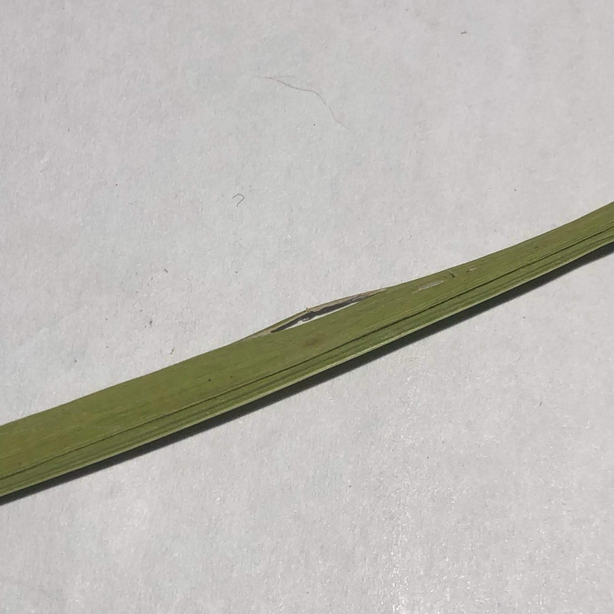
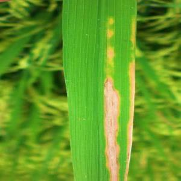
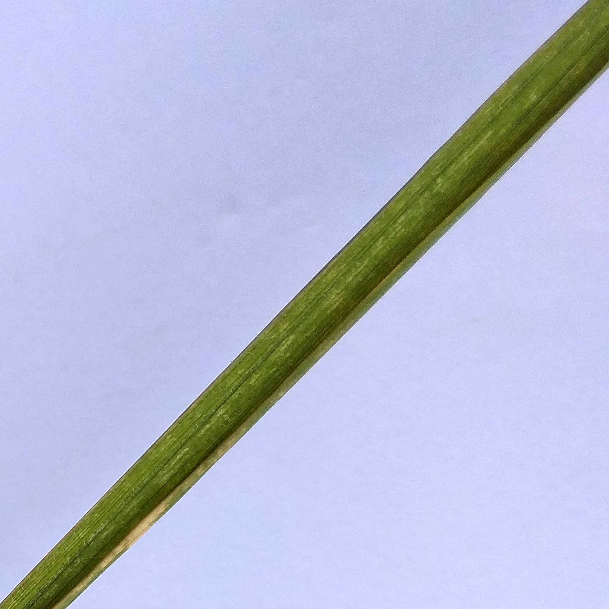

Daftar Daun yang Terdeteksi di Aplikasi ini
Berikut ini adalah daftar komoditas yang diketahui oleh sistem

Daun Sehat
Daun padi yang sehat menunjukkan karakteristik berikut:
- Warna hijau merata dan segar
- Tidak ada bercak atau lesi
- Struktur daun utuh dan normal
- Pertumbuhan optimal

Hawar / Kresek
Penyakit hawar daun atau kresek disebabkan oleh bakteri Xanthomonas oryzae. Gejala yang terlihat:
- Bercak kuning hingga putih pada daun
- Daun mengering dan mati
- Dapat menyebar dengan cepat
- Menurunkan hasil panen secara signifikan

Kondisi Lainnya
Kategori ini mencakup berbagai kondisi yang tidak termasuk dalam kategori sehat atau hawar, seperti:
- Kerusakan mekanis pada daun
- Gejala penyakit lain yang belum teridentifikasi
- Kondisi stres lingkungan
- Defisiensi nutrisi